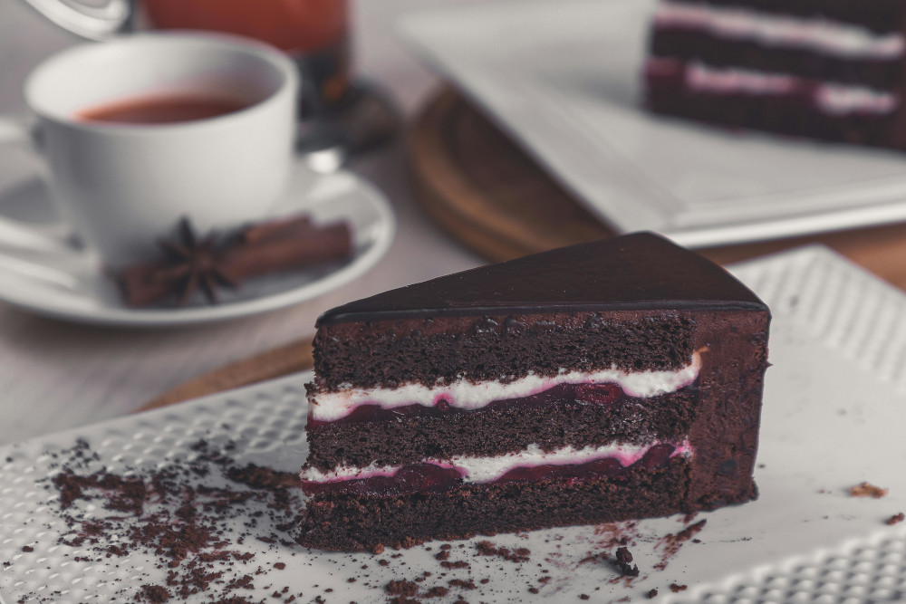

Receitas simples,porém saborosas para vôce cozinhar na sua casa
RECEITAS CASEIRAS
.Conheça algumas receitas bem simples, porém muito saborosas para você fazer no seu dia a dia.Receitas para
você aproveitar com sua familia, amigos, colegas de trabalho. Além disso, essas receitas podem se tornar uma ótima
fonte de renda, pelo fato delas serem bem fáceis de fazer e seus ingredientes serem simples.
Bolo de Chocolate

.O bolo de chocolate é uma das sobremesas mais populares e queridas em todo o mundo. Sua origem remonta ao século
XVIII, quando o chocolate começou a ser introduzido em receitas de confeitaria na Europa. A combinação de cacau
em pó, açúcar, farinha e outros ingredientes básicos resultou em um bolo delicioso e indulgente que rapidamente
se tornou um favorito entre as pessoas de todas as idades.
.O bolo de laranja é uma iguaria clássica, conhecida por sua mistura equilibrada de doçura e acidez.
As laranjas, frutas cítricas vibrantes e cheias de sabor, são um ingrediente essencial nesta receita.
Sua história remonta a tempos antigos, quando as laranjas eram cultivadas em regiões ensolaradas e eram
apreciadas
por seu suco refrescante e aroma encantador. Com o tempo, as pessoas começaram a incorporar esse sabor
único em diversas receitas, incluindo bolos.
Hoje, o bolo de laranja é uma sobremesa clássica em muitas culturas ao redor do mundo, sempre
lembrando-nos
da doçura da fruta e da arte da confeitaria.
.O pão de queijo é um dos quitutes mais amados do Brasil,
com origem no estado de Minas Gerais. Sua história remonta ao período colonial,
quando as fazendas de Minas Gerais produziam uma grande quantidade de queijo devido à atividade leiteira da região.
Para aproveitar o excesso de queijo e tornar a alimentação mais sustentável, surgiu a ideia de fazer um pão com esse ingrediente,
que se tornou uma iguaria tradicional e querida em todo o país.